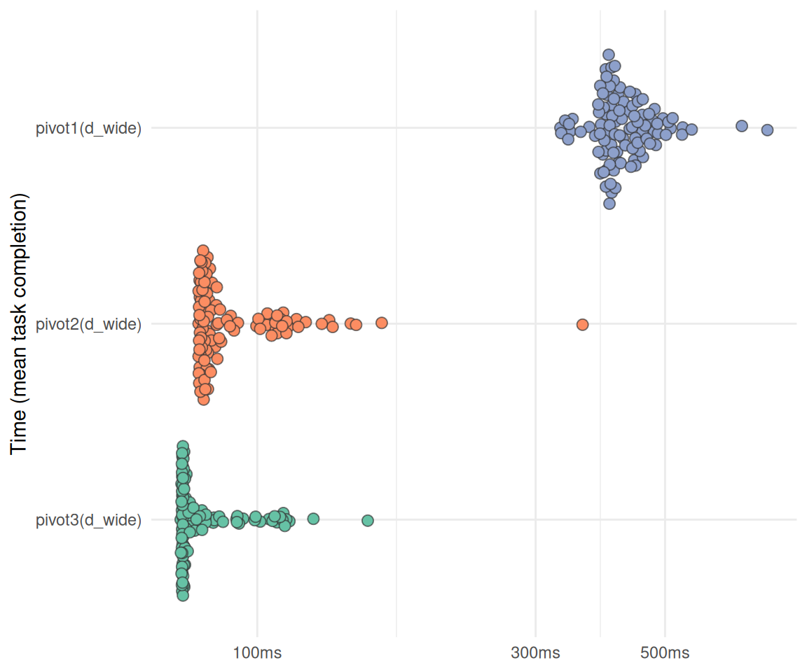
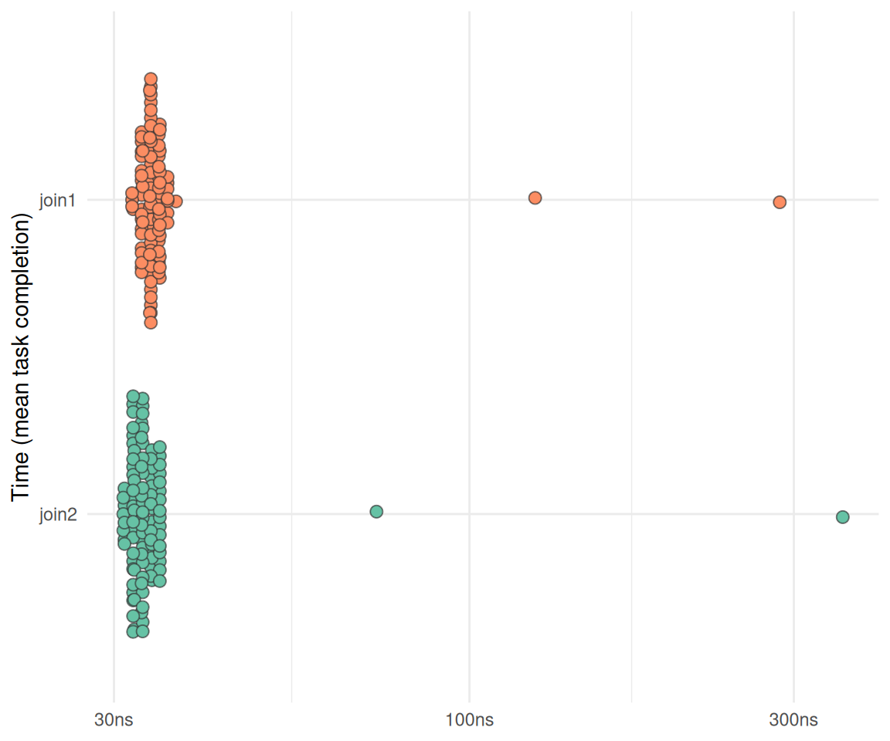

library(bench)
library(tidyverse)
library(data.table)
library(targets)
library(tictoc)
library(stringr)
library(tokenizers)Challenge 09 – Solution
Datum/Uhrzeit: 2026-01-09 22:41
“Eine Hackathon-Variante zur Evaluation der Klickdaten des KI-Tools ‘HaNS’”
Betrachten Sie dazu die Targets-Datei auf Github.
1 Setup
1.1 Libs
1.2 Other setup
source("_common.r")
list.files("funs", full.names = TRUE) |>
purrr::walk(source)
options(digits = 3)
options(tinytable_tt_digits = 2)
Sys.setenv("VROOM_CONNECTION_SIZE" = 131072 * 4)1.3 Load Targets
tar_load(c(
data_files_list,
data_all_fct,
data_separated_filtered,
course_and_uni_per_visit,
n_action_type,
time_spent_w_course_university
))2 Musterlösung
2.1 Optimieren Sie Ihre Analyse-Pipeline
… (mit Blick auf alle Aufgaben des Hackathon) mit Blick auf Geschwindigkeit (des Durchlaufs der Pipeline). Berichten Sie die Laufzeit vor und nach der Optimierung. (ca. 3 Punkte mit jeweils 5 Sätzen)
2.1.1 CSV-Dateien schneller einlesen
2.1.1.1 Testdaten
d <- data_files_list[1:10]2.1.1.2 Funktionen definieren
import_data1 <-
function(d) {
d |>
map(~ read_csv(., show_col_types = FALSE)) |>
rbindlist(fill = TRUE)
}
import_data2 <-
function(d) {
rbindlist(
lapply(d, fread, fill = TRUE, colClasses = "factor"),
fill = TRUE
)
}
import_data3 <-
function(d) {
rbindlist(
lapply(d, fread, fill = TRUE, colClasses = "character"),
fill = TRUE
)
}
import_data4 <- function(d) {
rbindlist(
lapply(d, fread, fill = TRUE, colClasses = "character", nThread = 4),
fill = TRUE
)
}
import_data4 <-
function(d) {
d |>
map(~ data.table::fread(.x, fill = TRUE, colClasses = "factor", nThread = 4)) |>
rbindlist(fill = TRUE)
}
import_data5 <- function(d) {
# Build shell command: concatenate all files
cmd <- paste("cat", paste(shQuote(d), collapse = " "))
# fread reads all files in one go (much faster than per-file lapply)
DT <- fread(
cmd = cmd,
fill = TRUE,
colClasses = "character",
showProgress = FALSE
)
}2.1.1.3 Funktionen testen
test1 <- import_data1(d)
test2 <- import_data2(d)
test3 <- import_data3(d)
test4 <- import_data4(d)
test5 <- import_data5(d)2.1.1.4 Effizienzvergleich
tic()
bm1 <-
bench::mark(
import_data1(d),
import_data2(d),
import_data3(d),
import_data4(d),
import_data5(d),
check = FALSE,
iterations = 1e1
)
toc()
## 61.169 sec elapsedErgebnisse im Überblick:
bm1 |>
dplyr::select(expression:n_gc) %>%
knitr::kable(digits = 2)| expression | min | median | itr/sec | mem_alloc | gc/sec | n_itr | n_gc |
|---|---|---|---|---|---|---|---|
| import_data1(d) | 1.52s | 1.63s | 0.60 | 23.82MB | 2.63 | 10 | 44 |
| import_data2(d) | 983.36ms | 1.06s | 0.93 | 5.44MB | 5.09 | 10 | 55 |
| import_data3(d) | 74.72ms | 79.06ms | 12.19 | 7.25MB | 1.22 | 10 | 1 |
| import_data4(d) | 963.85ms | 1.23s | 0.84 | 5.44MB | 4.94 | 10 | 59 |
| import_data5(d) | 50.46ms | 52.57ms | 18.56 | 4.82MB | 0.00 | 10 | 0 |
Visualisierung:
## plot
plot_bm <- function(bm) {
bm$expression <- factor(bm$expression, levels = rev(bm$expression))
bench:::autoplot.bench_mark(bm, shape = 21, size = 2.5, color = "#333333aa") +
ggplot2::aes(fill = expression) +
# dataviz::theme_mwk() +
ggplot2::theme(legend.position = "none",
plot.caption = ggplot2::element_text(family = "Roboto Condensed")) +
ggplot2::labs(x = NULL, y = "Time (mean task completion)")
}plot_bm(bm1)
2.2 Daten schneller pivotieren
2.2.1 Testdaten
d_wide <- data_all_fct[, 1:1000]2.2.2 Funktionen definieren
pivot1 <- function(d) {
d |>
select(idvisit, fingerprint, contains("actiondetails_")) |>
mutate(across(everything(), as.character)) |>
pivot_longer(-c(idvisit, fingerprint))
}
pivot2 <- function(d) {
d_melt <- melt(
as.data.table(d),
id.vars = c("idvisit", "fingerprint"),
measure.vars = patterns("actiondetails_"),
variable.name = "action_count",
value.name = "value"
)
}
pivot3 <- function(d) {
vars_to_pivot <- grep("actiondetails_", names(d), value = TRUE)
if (!is.data.table(d)) DT <- as.data.table(d) else DT <- d
vars_idx <- grep("actiondetails_", names(DT))
out <- melt(DT,
id.vars = c("idvisit", "fingerprint"),
measure.vars = vars_idx,
variable.name = "variable",
value.name = "value")
}2.2.3 Funktionen testen
test_pivot1 <- pivot1(d_wide)
test_pivot2 <- pivot2(d_wide)
test_pivot3 <- pivot3(d_wide)2.2.4 Effizienzvergleich
tic()
bm_pivot <-
bench::mark(
pivot1(d_wide),
pivot2(d_wide),
pivot3(d_wide),
check = FALSE,
iterations = 1e2
)
toc()
## 62.991 sec elapsedErgebnisse im Überblick:
bm_pivot |>
dplyr::select(expression:n_gc) %>%
knitr::kable(digits = 2)| expression | min | median | itr/sec | mem_alloc | gc/sec | n_itr | n_gc |
|---|---|---|---|---|---|---|---|
| pivot1(d_wide) | 330.8ms | 402.1ms | 2.46 | 159.3MB | 1.94 | 56 | 44 |
| pivot2(d_wide) | 79.3ms | 81.4ms | 11.82 | 85.2MB | 3.33 | 78 | 22 |
| pivot3(d_wide) | 73.9ms | 74.8ms | 12.88 | 71.7MB | 2.45 | 84 | 16 |
plot_bm(bm_pivot)
2.3 Daten schneller joinen
2.3.1 Testdaten
d_long <- data_separated_filtered
d_date <- course_and_uni_per_visit2.3.2 Funktionen definieren
join1 <- function(d_long, d_date) {
setDT(d_long)
setDT(d_date)
setkey(d_date, "idvisit")
# 1. Convert the factor column (x.idvisit) to an integer.
# Factors store underlying values as integers, so we must first convert it to character
# to avoid getting the factor level index, and then to integer.
d_long[, idvisit := as.integer(as.character(idvisit))]
d_date[, idvisit := as.integer(idvisit)]
d_date[, fingerprint := NULL]
# Join: [i, j]
# DT[i] means join DT with i.
# Left join syntax: A[B] where B is the "lookup" table (with the key set)
# This performs the join:
data_joined <- d_date[
d_long,
on = "idvisit"
]
}
join2 <- function(d_long, d_date) {
d_date |>
mutate(idvisit = as.integer(as.character(idvisit))) |>
left_join(d_long)
}2.3.3 Funktionen testen
d_join1 <- join1(d_long, d_date)
d_join2 <- join2(d_long, d_date)2.3.4 Effizienzvergleich
bm_join <-
mark(
join1,
join2,
check = FALSE,
iterations = 1e2
)plot_bm(bm_join)
2.4 Optimieren Sie Ihre Analyse-Pipeline mit Blick auf Robustheit.
(ca. 3 Punkte mit jeweils 5 Sätzen)
2.4.1 Robusteres Pivotieren
pivot3_ribzst <- function(d) {
vars_to_pivot <- grep("actiondetails_", names(d), value = TRUE)
if (!is.data.table(d)) DT <- as.data.table(d) else DT <- d
### Prüfen, ob benötigte Spalten vorhanden sind:
# Check required id columns
required_ids <- c("idvisit", "fingerprint")
missing_ids <- setdiff(required_ids, names(DT))
if (length(missing_ids) > 0) {
stop("Missing required id columns: ", paste(missing_ids, collapse = ", "))
}
vars_idx <- grep("actiondetails_", names(DT))
out <- melt(DT,
id.vars = c("idvisit", "fingerprint"),
measure.vars = vars_idx,
variable.name = "variable",
value.name = "value")
}2.4.2 Robusteres Importieren
import_data5 <- function(d) {
# Build shell command: concatenate all files
cmd <- paste("cat", paste(shQuote(d), collapse = " "))
# fread reads all files in one go (much faster than per-file lapply)
DT <- fread(
cmd = cmd,
fill = TRUE,
colClasses = "character",
showProgress = FALSE
)
}import_data5_robust <- function(d) {
# Check input
if (length(d) == 0) {
warning("No files provided. Returning empty data.table.")
return(data.table())
}
# Check: Ensure all files exist
missing_files <- d[!file.exists(d)]
if (length(missing_files) > 0) {
stop("The following files do not exist: ", paste(missing_files, collapse = ", "))
}
# Build safe shell command
cmd <- paste("cat", paste(shQuote(d), collapse = " "))
# fread reads all files in one go
DT <- fread(
cmd = cmd,
fill = TRUE,
colClasses = "character",
showProgress = FALSE
)
# Check: Warn if column counts vary across files (optional)
if (length(unique(ncol(DT))) > 1) {
warning("Column counts vary across files. Some columns may have been filled with NA.")
}
# Explicitly Return the data.table
return(DT)
}2.4.3 Robusteres Berechnen der Promptlänge
Ursprüngliche Funktion:
compute_prompt_length <- function(data, no_prompt_text = TRUE) {
#' Compute the length of a prompt in characters
#' This function computes the length of a given prompt in terms of number of characters.
#' It takes a single argument 'prompt', which is expected to be a string.
# if (!is.character(data$value)) {
# stop("Input must be a character string.")
# }
llm_interactions <-
data |>
select(type, value, idvisit) |>
filter(type == "subtitle") |>
mutate(value = as.character(value)) |>
filter(str_detect(value, "message_to_llm"))
prompts <-
llm_interactions |>
mutate(prompt = str_extract(value, '(?<=Action: \\"\").*?(?=\\"\\")')) |>
mutate(token_length = lengths(tokenize_words(prompt)))
if (no_prompt_text) {
prompts <- prompts |> select(-prompt)
}
return(prompts)
}
# str_match(txt, '""([^"]+)""')
# txtRobustere Version:
compute_prompt_length_robust <- function(data, no_prompt_text = TRUE) {
# Input validation:
if (!is.data.frame(data)) {
stop("Input 'data' must be a data.frame or tibble.")
}
# Check required cols:
required_cols <- c("type", "value", "idvisit")
missing_cols <- setdiff(required_cols, names(data))
if (length(missing_cols) > 0) {
stop("Missing required columns: ", paste(missing_cols, collapse = ", "))
}
# Filter only subtitle rows with "message_to_llm"
llm_interactions <- data %>%
select(all_of(required_cols)) %>%
filter(type == "subtitle") %>%
mutate(value = as.character(value)) %>%
filter(str_detect(value, "message_to_llm"))
if (nrow(llm_interactions) == 0) {
warning("No subtitle rows containing 'message_to_llm' found.")
return(tibble::tibble())
}
# Extract prompt safely
prompts <- llm_interactions %>%
mutate(
prompt = str_extract(value, '(?<=Action: \\"\").*?(?=\\"\\")')
)
# Compute token length, handling NA prompts:
prompts <- prompts %>%
mutate(
token_length = ifelse(
is.na(prompt) | prompt == "",
0L,
lengths(tokenize_words(prompt))
)
)
# Optionally remove the prompt column
if (no_prompt_text && "prompt" %in% names(prompts)) {
prompts <- prompts %>% select(-prompt)
}
prompts
}2.5 Optimieren Sie Ihre Analyse-Pipeline mit Blick auf Allgemeinheit und Flexibilität
2.5.1 Explizites return-Statement
Am Ende einer Funktion kann man explizit schreiben, welches Objekt die Funktion zurückgibt:
import_data5_with_return <- function(d) {
# Build shell command: concatenate all files
cmd <- paste("cat", paste(shQuote(d), collapse = " "))
# fread reads all files in one go (much faster than per-file lapply)
DT <- fread(
cmd = cmd,
fill = TRUE,
colClasses = "character",
showProgress = FALSE
)
# Achtung, mit return:
return(DT)
}2.5.2 idvisit vs. id_visit
Tja, hat meine ID-Variable jetzt einen Unterstrich oder nicht?
Ist doch egal, unser Code akzeptiert beide Varianten!
d1 <- tibble(idvisit = c(1,2,3),
var = c("a", "b", "c"),
value = c(10, 20, 30))
d2 <- tibble(id_visit = c(1,2,3),
var = c("a", "b", "c"),
value = c(10, 20, 30))idvar <- c("id_visit", "idvisit")
d1 |> select(any_of(idvar))| idvisit |
|---|
| 1 |
| 2 |
| 3 |
d2 |> select(any_of(idvar))| id_visit |
|---|
| 1 |
| 2 |
| 3 |
Vielleicht noch besser: An einer Stelle in der Pipeline (eher zu Beginn) den Namen auf einen Standard bringen, z.B. idvisit.
2.5.3 Funktionen nicht hart-verdrahten
Ursprüngliche Funktion:
add_dates_to_n_action_type <- function(data, data_time) {
data_time$idvisit <- as.integer(data_time$idvisit)
n_action_type_per_month <-
data |>
select(nr, idvisit, category) |>
ungroup() |>
left_join(data_time)
#select(-c(dow, hour, nr)) |>
#drop_na() |>
#mutate(month_start = floor_date(date_time, "month")) |>
#count(month_start, category)
}Allgemeinere Funktion:
add_dates_to_n_action_type_more_general <- function(data, data_time, idvar = "idvisit") {
# Convert join variable to integer in both data frames
data[[idvar]] <- as.integer(data[[idvar]])
data_time[[idvar]] <- as.integer(as.character(data_time[[idvar]]))
n_action_type_per_month <- data |>
select(nr, all_of(idvar), category) |>
left_join(data_time, by = idvar)
return(n_action_type_per_month)
}Test:
d_not_so_general <- add_dates_to_n_action_type(
data = n_action_type,
data_time = time_spent_w_course_university)
d_more_general <- add_dates_to_n_action_type_more_general(
data = n_action_type,
data_time = time_spent_w_course_university)
identical(d_not_so_general, d_more_general)
## [1] TRUE2.5.4 Rechtecke, um Semester und Ferien optisch zu unterscheiden
"funs/comp_semester_rects.R"
## [1] "funs/comp_semester_rects.R"2.5.5 Frage die KI
Alle Funktionen in eine KI hochladen und nach Optimierungspotenzial fragen.
Z.B. in “Google Notebook LM” muss man die R-Dateien vorher in Txt-Dateien umwandeln: rename 's/\.R$/.txt/' *.R
2.6 Diskutieren Sie Pro und Contra der Versionierungssoftware git.
Git: git push origin master.


2.7 Diskutieren Sie Pro und Contra der Notizen-Software Obsidian.
Video von No Boilerplate und [Folien]/https://www.namtao.com/obsidian-for-learning/
2.7.1 Pro
- Plain text
- Markdown
- Lokale Dateien
- E2EE
- Tags, Links
- Open source
- Viele Plugins
- offline und online
- alle Plattformen
- schnell
- kein Lock-in
2.8 Contra
- Nicht so gut für gemeinsames Arbeiten
2.9 Erläutern Sie Ihre Datensicherheit und Backup-Strategie während des Projekts. Wie schützen Sie sich vor Datenverlust?
2.9.1 Backup
- Github
- Lokale Backups
2.9.2 Datensicherheit
- Cryptomator
- KeepassXC
2.10 Life Hacks
- Nicht zu spät anfangen :-)
- Schreibtisch frei räumen
- Lange Zeitblöcke einplanen
- Obsidian für Notizen
- Wochenende frei halten
- Den Sinn sehen
2.11 Text-Editoren
- RStudio
- Positron (Outline feature is broken)
- VIM
- NeoVIM
2.12 Ohne R
- Python
- Positron
- Jupyter Notebooks
2.13 sessionInfo
sessioninfo::session_info()
## ─ Session info ───────────────────────────────────────────────────────────────
## setting value
## version R version 4.5.1 (2025-06-13)
## os Ubuntu 25.10
## system x86_64, linux-gnu
## ui X11
## language (EN)
## collate de_DE.UTF-8
## ctype de_DE.UTF-8
## tz Europe/Berlin
## date 2026-01-09
## pandoc 3.6.3 @ /usr/lib/rstudio/resources/app/bin/quarto/bin/tools/x86_64/ (via rmarkdown)
## quarto 1.8.25 @ /usr/lib/rstudio/resources/app/bin/quarto/bin/quarto
##
## ─ Packages ───────────────────────────────────────────────────────────────────
## package * version date (UTC) lib source
## backports 1.5.0 2024-05-23 [3] CRAN (R 4.4.1)
## base64url 1.4 2018-05-14 [3] CRAN (R 4.0.1)
## beeswarm 0.4.0 2021-06-01 [3] CRAN (R 4.1.1)
## bench * 1.1.4 2025-01-16 [3] CRAN (R 4.4.3)
## bit 4.6.0 2025-03-06 [3] CRAN (R 4.4.3)
## bit64 4.6.0-1 2025-01-16 [3] CRAN (R 4.5.0)
## callr 3.7.6 2024-03-25 [3] CRAN (R 4.4.0)
## cli 3.6.5 2025-04-23 [1] CRAN (R 4.5.1)
## codetools 0.2-20 2024-03-31 [4] CRAN (R 4.3.3)
## crayon 1.5.3 2024-06-20 [3] CRAN (R 4.4.2)
## data.table * 1.17.8 2025-07-10 [1] RSPM (R 4.5.1)
## dichromat 2.0-0.1 2022-05-02 [3] CRAN (R 4.2.0)
## digest 0.6.39 2025-11-19 [1] CRAN (R 4.5.1)
## dplyr * 1.1.4 2023-11-17 [3] CRAN (R 4.4.2)
## evaluate 1.0.5 2025-08-27 [1] CRAN (R 4.5.1)
## farver 2.1.2 2024-05-13 [3] CRAN (R 4.4.1)
## fastmap 1.2.0 2024-05-15 [3] CRAN (R 4.4.1)
## forcats * 1.0.0 2023-01-29 [3] CRAN (R 4.2.2)
## generics 0.1.4 2025-05-09 [1] CRAN (R 4.5.1)
## ggbeeswarm 0.7.2 2023-04-29 [3] CRAN (R 4.3.1)
## ggplot2 * 4.0.1 2025-11-14 [1] RSPM (R 4.5.1)
## glue 1.8.0 2024-09-30 [3] CRAN (R 4.4.2)
## gtable 0.3.6 2024-10-25 [3] CRAN (R 4.4.2)
## hms 1.1.3 2023-03-21 [3] CRAN (R 4.3.1)
## htmltools 0.5.8.1 2024-04-04 [3] CRAN (R 4.4.0)
## htmlwidgets 1.6.4 2023-12-06 [3] CRAN (R 4.3.2)
## igraph 2.1.4 2025-01-23 [3] CRAN (R 4.5.0)
## jsonlite 2.0.0 2025-03-27 [1] CRAN (R 4.5.1)
## knitr 1.50 2025-03-16 [3] CRAN (R 4.4.3)
## lifecycle 1.0.4 2023-11-07 [3] CRAN (R 4.3.2)
## lubridate * 1.9.4 2024-12-08 [3] CRAN (R 4.4.2)
## magrittr 2.0.4 2025-09-12 [1] CRAN (R 4.5.1)
## pillar 1.11.1 2025-09-17 [1] CRAN (R 4.5.1)
## pkgconfig 2.0.3 2019-09-22 [3] CRAN (R 4.0.1)
## prettyunits 1.2.0 2023-09-24 [3] CRAN (R 4.3.1)
## processx 3.8.6 2025-02-21 [3] CRAN (R 4.4.3)
## profmem 0.6.0 2020-12-13 [3] CRAN (R 4.0.3)
## ps 1.9.0 2025-02-18 [3] CRAN (R 4.4.3)
## purrr * 1.2.0 2025-11-04 [1] RSPM (R 4.5.1)
## R6 2.6.1 2025-02-15 [3] CRAN (R 4.4.3)
## RColorBrewer 1.1-3 2022-04-03 [3] CRAN (R 4.2.0)
## Rcpp 1.1.0 2025-07-02 [3] CRAN (R 4.5.1)
## readr * 2.1.6 2025-11-14 [1] RSPM
## rlang 1.1.6 2025-04-11 [1] CRAN (R 4.5.1)
## rmarkdown 2.30 2025-09-28 [1] RSPM (R 4.5.1)
## rstudioapi 0.17.1 2024-10-22 [3] CRAN (R 4.4.1)
## S7 0.2.1 2025-11-14 [1] RSPM (R 4.5.1)
## scales 1.4.0 2025-04-24 [1] RSPM (R 4.5.1)
## secretbase 1.0.5 2025-03-04 [1] RSPM
## sessioninfo 1.2.3 2025-02-05 [3] CRAN (R 4.4.3)
## SnowballC 0.7.1 2023-04-25 [1] RSPM
## stringi 1.8.7 2025-03-27 [1] CRAN (R 4.5.1)
## stringr * 1.6.0 2025-11-04 [1] CRAN (R 4.5.1)
## targets * 1.11.4 2025-09-13 [1] RSPM
## tibble * 3.3.0 2025-06-08 [1] CRAN (R 4.5.1)
## tictoc * 1.2.1 2024-03-18 [1] RSPM
## tidyr * 1.3.1 2024-01-24 [3] CRAN (R 4.3.2)
## tidyselect 1.2.1 2024-03-11 [3] CRAN (R 4.4.0)
## tidyverse * 2.0.0 2023-02-22 [3] CRAN (R 4.4.2)
## timechange 0.3.0 2024-01-18 [3] CRAN (R 4.4.3)
## tokenizers * 0.3.0 2022-12-22 [1] RSPM
## tzdb 0.5.0 2025-03-15 [3] CRAN (R 4.4.3)
## vctrs 0.6.5 2023-12-01 [3] CRAN (R 4.3.2)
## vipor 0.4.7 2023-12-18 [3] CRAN (R 4.3.2)
## vroom 1.6.5 2023-12-05 [3] CRAN (R 4.3.2)
## withr 3.0.2 2024-10-28 [3] CRAN (R 4.4.1)
## xfun 0.54 2025-10-30 [1] CRAN (R 4.5.1)
## yaml 2.3.10 2024-07-26 [3] CRAN (R 4.4.1)
##
## [1] /home/sebastian-sauer/R/x86_64-pc-linux-gnu-library/4.5
## [2] /usr/local/lib/R/site-library
## [3] /usr/lib/R/site-library
## [4] /usr/lib/R/library
## * ── Packages attached to the search path.
##
## ──────────────────────────────────────────────────────────────────────────────Wiederverwendung
MIT
Zitat
Mit BibTeX zitieren:
@online{sauer,
author = {Sauer, Sebastian},
title = {Challenge 09 -\/- Solution},
url = {https://sebastiansauer.github.io/hans-hackathon2025/challenge09-solution.html},
langid = {de-DE}
}
Bitte zitieren Sie diese Arbeit als:
Sauer, Sebastian. n.d. “Challenge 09 -- Solution.” https://sebastiansauer.github.io/hans-hackathon2025/challenge09-solution.html.